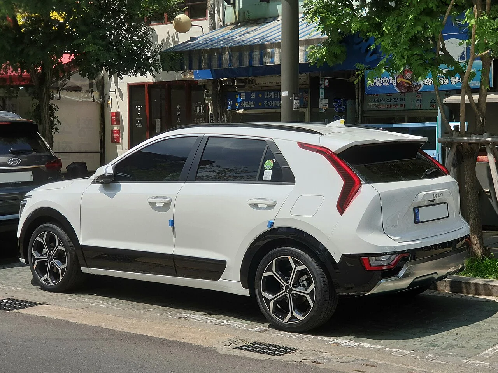
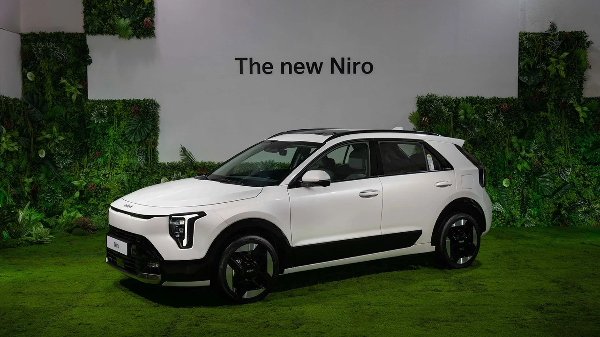
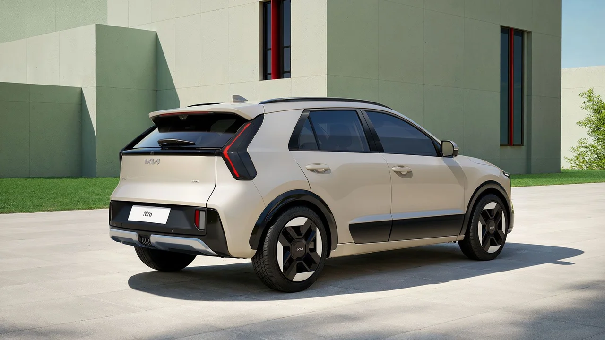
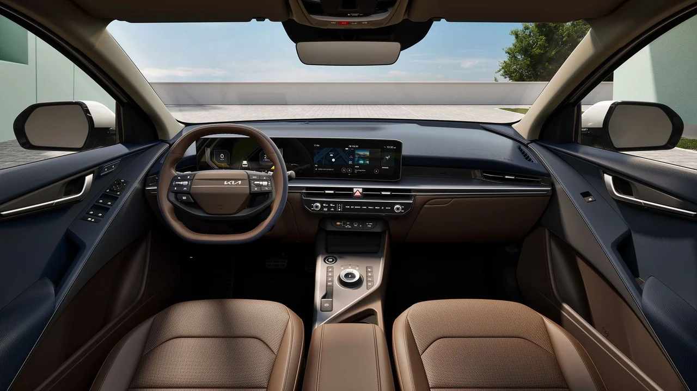
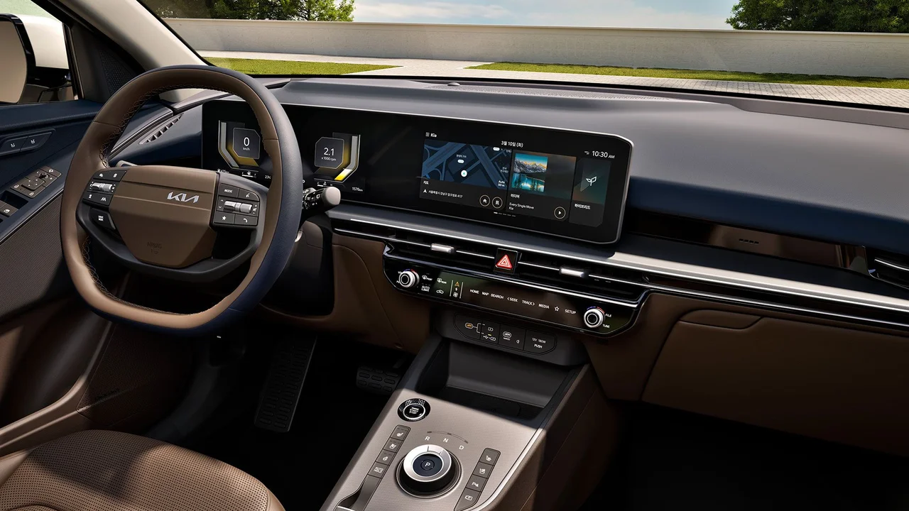
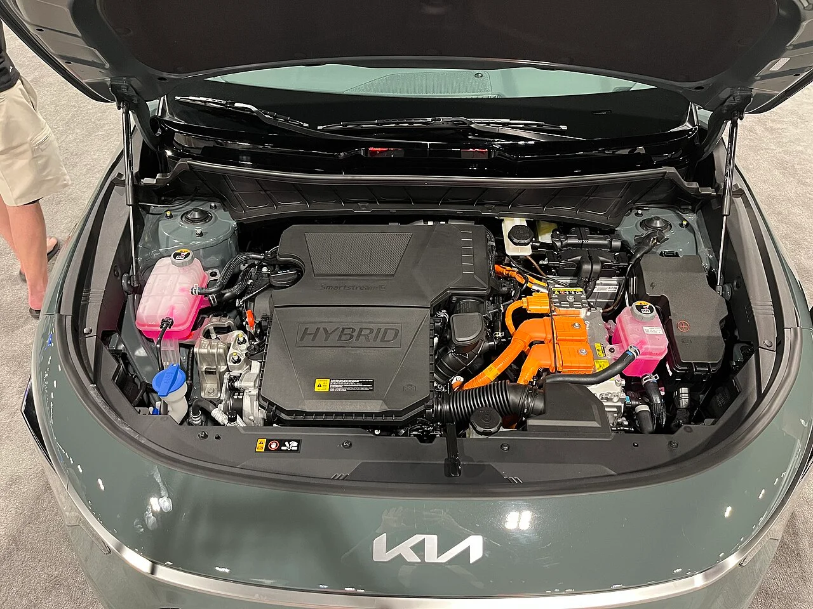
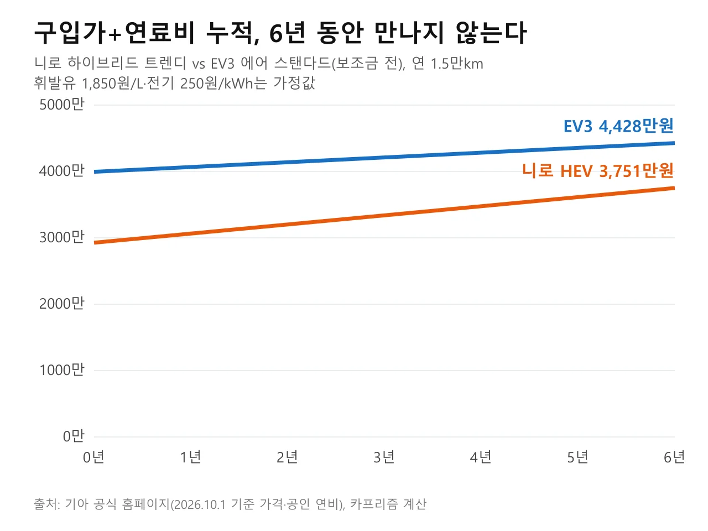
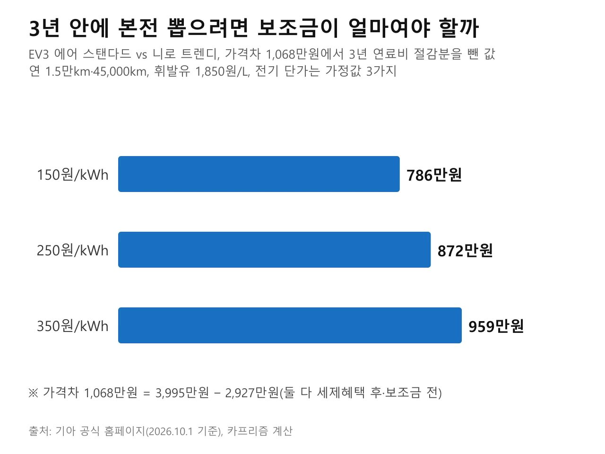
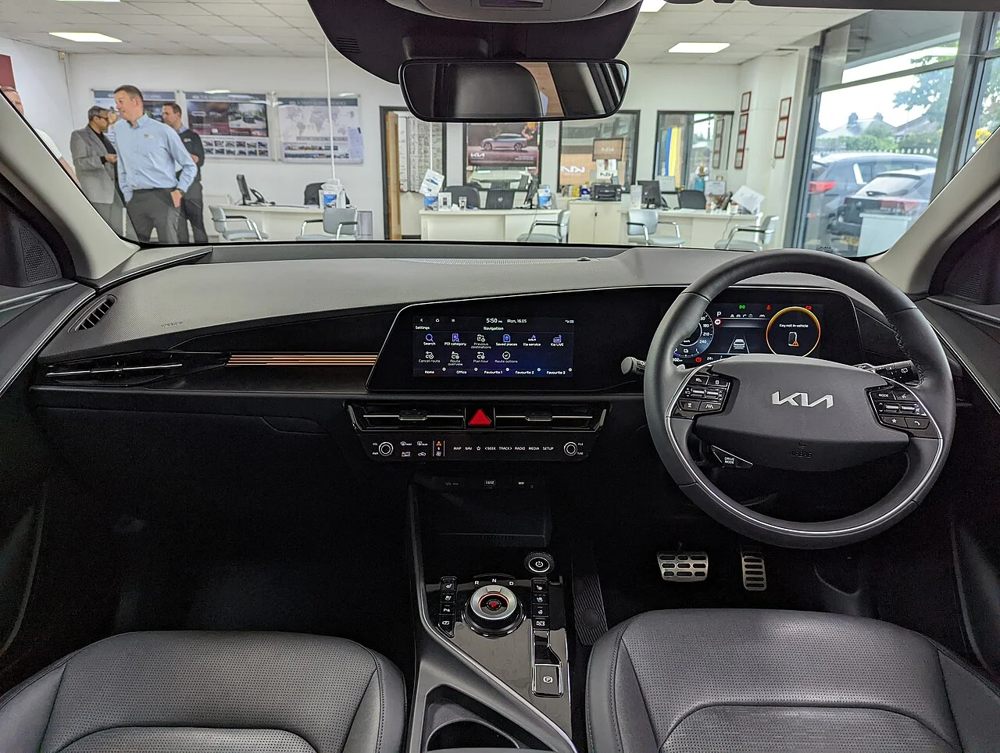

▲ 공식 가격 페이지에 올라 있는 니로는 1.6 하이브리드뿐이다. 사진은 부분변경 이전 2세대 모델 ⓒ Damian B Oh, Wikimedia Commons (CC BY-SA 4.0)
"니로 EV 사려고 했는데, 지금은 못 사나요?" 기아 공식 누리집 니로 가격 페이지(2026년 10월 1일 기준)에는 전기차도 플러그인 하이브리드도 보이지 않는다. 올라 있는 파워트레인은 1.6 하이브리드 하나, 트림은 트렌디·프레스티지·시그니처 세 개다. 이 글은 2026년 10월 현재 공식 가격표에 있는 니로 하이브리드(세제혜택 후 가격)를 기준으로, 가장 싼 트렌디·16인치 타이어 복합연비 20.2km/L, 연 1만 5,000km를 3년 타는 조건의 연료비를 직접 계산했다. 같은 기아 소형 SUV 전기차인 EV3와는 가격표와 공인 수치만 놓고 비교했고, 보조금은 변동이 커서 넣지 않은 채 "얼마가 필요한지"만 뒤집어 계산했다.
📍 이 글의 계산 조건
· 가격: 기아 공식 누리집 2026.10.1 기준, 세제혜택 후, 보조금 제외
· 니로: 트렌디, 16인치, 복합연비 20.2km/L(정부 신고 기준) / EV3: 에어 스탠다드 17인치, 복합 전비 5.2km/kWh
· 주행거리: 연 15,000km × 3년 = 45,000km (가정)
· 휘발유 1,850원/L (오피넷 9월 5주 전국 평균 1,857.6원을 뉴스1이 인용한 값을 반올림한 가정)
· 전기 150·250·350원/kWh 세 가지 (충전 방식별 가정이며 공식 요금 아님)
· 보험료·세금·정비비·감가상각은 계산에서 뺐다
1. 기아 관계자 "니로 EV는 단산했고 재고만 판매"
한국경제는 2026년 3월 29일 기사에서 정윤경 기아 국내마케팅1팀 책임매니저가 3월 9일 열린 니로 부분변경 출시 간담회에서 "니로 EV는 단산했고 지금은 남아있는 재고만 판매하려고 한다"고 밝혔다고 전했다. 같은 간담회 발언은 뉴스와이도 보도했다. 한국경제에 따르면 기아는 순수 전기차 시리즈 중심으로 전동화에 대응하고, 니로는 하이브리드 위주로 라인업을 재편한다. 이 말이 나온 시점은 3월이고, 지금 전시장에 재고가 남았는지는 이 글에서 확인하지 못했다. 다만 10월 1일 기준 공식 가격 페이지에 니로 EV 항목이 없다는 점과, 3월 10일 기아 보도자료(더 뉴 니로)가 1.6 하이브리드만 다뤘다는 점은 직접 확인했다. 플러그인 하이브리드(PHEV)는 기아 공식 자료에 판매 중단이나 지속 여부 언급이 없어 이 글에서는 판단하지 않는다. 기아 니로 가격 페이지 바로가기
▲ 부분변경 이전 2세대 니로 하이브리드. 현재 판매되는 부분변경 모델과는 전면 디자인이 다르다. ⓒ Damian B Oh, Wikimedia Commons (CC BY-SA 4.0)
숫자로 보면 쇠퇴 속도가 분명하다. 한국경제가 인용한 국내 판매량은 2세대가 출시된 2022년에 9,194대로 정점이었고, 이후 계속 줄었다.
| 연도 | 판매량 |
|---|---|
| 2022년 | 9,194대 |
| 2023년 | 7,161대 |
| 2024년 | 1,388대 |
| 2025년 | 295대 |
| 2026년 1~2월 | 8대 |
기사는 판매 급감의 배경으로 같은 급의 엔트리 전기차 EV3 등장과 전용 전기차 플랫폼 중심의 시장 이동을 꼽는다. 이는 업계 해석을 전한 부분이어서 단정 대신 그렇게 알려졌다고만 적는다. 이 구도는 5장의 가격 비교에서 숫자로 확인된다. 니로 EV와 하이브리드를 5년 기준으로 비교한 이전 기사 니로 EV·니로 하이브리드 5년 유지비는 EV가 팔리던 시점의 계산이니 참고용으로만 보면 된다.
2. 지금 살 수 있는 니로: 세 트림, 두 가지 타이어, 연비는 19~20km/L
공식 가격표의 세 트림은 트렌디 2,927만 원, 프레스티지 3,242만 원, 시그니처 3,515만 원(모두 세제혜택 후)이다. 세제혜택 전 가격은 각각 3,027만 원, 3,342만 원, 3,615만 원으로 모두 100만 원씩 높다. 트림 간 격차는 트렌디→프레스티지가 315만 원, 프레스티지→시그니처가 273만 원이다.
| 트림 | 세제혜택 전 | 세제혜택 후 |
|---|---|---|
| 트렌디 | 30,270,000 | 29,270,000 |
| 프레스티지 | 33,420,000 | 32,420,000 |
| 시그니처 | 36,150,000 | 35,150,000 |
파워트레인은 스마트스트림 1.6 가솔린 엔진(1,580cc)에 6단 DCT, 32kW 전기모터 조합이다. 제원 페이지의 엔진 최고출력은 105ps, 최대토크는 14.7kgf·m, 모터 최대토크는 170Nm으로 표기돼 있다. 연비는 타이어와 빌트인 캠 적용 여부에 따라 달라진다.
| 구분 | 복합 | 도심 | 고속 | CO₂(g/km) | 공차중량 |
|---|---|---|---|---|---|
| 16인치 | 20.2 | 21.4 | 18.8 | 76 | 1,450kg |
| 16인치+빌트인 캠 | 19.4 | 20.1 | 18.6 | 80 | 1,450kg |
| 18인치 | 19.4 | 20.6 | 18.1 | 80 | 1,470kg |
| 18인치+빌트인 캠 | 18.8 | 19.4 | 18.1 | 83 | 1,470kg |
모두 연비 1등급이다. 제원 페이지에서 확인되지 않는 항목은 트림별 세부 사양(휠·시트 등)과 연료탱크 용량이라 이 글에서는 다루지 않는다. 휠 크기는 트림에 따라 달라질 수 있으니 계약 전 견적서로 확인해야 한다.

▲ 니로 하이브리드 후면. 사진은 부분변경 이전 모델이다. ⓒ Damian B Oh, Wikimedia Commons (CC BY-SA 4.0)
3. 부분변경 ‘더 뉴 니로’에서 달라진 것: 얼굴·실내·하이브리드 제어
기아는 3월 10일 보도자료로 ‘더 뉴 니로’ 계약 시작을 알렸다. 2022년 1월 출시된 2세대 이후 약 4년 만의 상품성 개선 모델이다. 파워트레인은 1.6 하이브리드로, 시스템 최고출력 141ps·최대토크 27.0kgf·m, 복합연비 20.2km/L(16인치 기준)로 소개됐다. 차체는 전장 4,430mm, 전폭 1,825mm, 전고 1,545mm, 축거 2,720mm다(공식 제원 페이지).
외관은 가로·세로 라인을 강조한 ‘스타맵 시그니처 라이팅’ 주간주행등, 다듬은 범퍼와 그릴 하단, 대각선 형태의 LED 리어 콤비네이션 램프가 바뀐 부분이다. 신규 외장색 ‘아이보리 실버’를 포함해 7종이 마련됐다.

▲ 부분변경 ‘더 뉴 니로’ 미디어 행사 현장. 전시된 흰색 차량의 전면 디자인이 이전 모델과 달라졌다. 사진은 기아가 배포한 행사 사진이다. ⓒ 기아 (현대자동차그룹 뉴스룸 보도자료)

▲ 기아가 공개한 더 뉴 니로 후면 이미지. 후면 램프가 대각선 형태로 바뀌었다. 기아가 배포한 홍보 이미지로, 실차 촬영 여부는 확인되지 않았다. ⓒ 기아 (현대자동차그룹 뉴스룸 보도자료)
실내는 12.3인치 클러스터와 인포테인먼트를 하나로 묶은 파노라믹 커브드 디스플레이가 핵심이다. 더블 D컷 투톤 스티어링 휠, 신규 패턴의 크래시 패드와 플로어 콘솔 가니쉬가 적용됐고, 운전석 릴렉션 컴포트 시트·동승석 이지 억세스·2열 워크인 디바이스·2열 리클라이닝 시트(기존 2단 조절보다 세분화)가 들어갔다. 1·2열 레그룸과 헤드룸을 “동급 최고 수준”으로 확보했다는 설명이 있지만 구체 수치는 공개되지 않았다.

▲ 기아가 공개한 더 뉴 니로 실내 이미지. 갈색 시트와 가로로 이어진 디스플레이가 보인다. 기아가 배포한 홍보 이미지로, 실차 촬영 여부는 확인되지 않았다. ⓒ 기아 (현대자동차그룹 뉴스룸 보도자료)

▲ 곡면 디스플레이와 투톤 스티어링 휠이 보이는 운전석 부분. 기아가 배포한 홍보 이미지다. ⓒ 기아 (현대자동차그룹 뉴스룸 보도자료)
하이브리드에 새로 들어간 기능은 세 가지다. 스마트 회생제동은 앞차 거리·내비게이션 도로 정보·주행 상황을 종합해 회생제동 단계를 자동 조절하고, 하이브리드 계층형 예측 제어는 경로와 도로 상황을 예측해 배터리 충전량을 최적화한다. 스테이 모드는 P단 정차 중 엔진 공회전 없이 고전압 배터리 전력만으로 편의장치를 쓰게 한다. 공식 제원 페이지의 하이브리드 배터리는 베바스토코리아홀딩스가 팩을 만들고 셀은 CATL(NCM 계열 각형)이 공급한다.
| 구분 | 내용 |
|---|---|
| 에어백·안전 | 2열 사이드 포함 10에어백, 전 좌석 시트벨트 프리텐셔너, 스티어링 휠 그립 감지 |
| 주행 보조(ADAS) | 고속도로 주행 보조 2, 차로 유지 보조 2, 전방 충돌방지 보조(교차 차량·측방 접근차·추월 시 대향차·회피 조향 보조), 후측방 충돌방지 보조(전진 출차), 서라운드 뷰 모니터 |
| 커넥티비티 | 무선 업데이트(OTA), 기아 AI 어시스턴트, 디지털 키 2, 워크 어웨이 락, 빌트인 캠 2 플러스, 증강현실 내비게이션, e 하이패스 |
| 기타 | 100W C타입 USB 단자, 애프터 블로우, 서스펜션 튜닝 최적화, 대시 흡음 패드 밀도 상향 |
가격은 계약 시작 시점과 지금이 다르다. 3월 10일 보도자료의 세제혜택 후 가격은 트렌디 2,885만 원, 프레스티지 3,195만 원, 시그니처 3,464만 원이었다. 10월 1일 공식 가격 페이지(2,927만·3,242만·3,515만 원)와 비교하면 각각 42만 원, 47만 원, 51만 원 높다. 인상 이유는 공식 자료에서 확인하지 못했다. 보증 조건도 이번 보도자료에는 나오지 않아 다루지 않는다.
4. 3년 연료비 직접 계산: 트렌디 기준 412만 원
수식은 단순하다. 연료비 = 주행거리 ÷ 연비 × 휘발유 단가. 연 15,000km를 20.2km/L로 달리면 연 742.6L, 여기에 1,850원을 곱하면 연 1,373,762원(월 약 11만 4,000원)이다. 3년이면 4,121,286원, 약 412만 원이다. 계산은 node로 재검산했다. 공인연비는 실제와 다를 수 있다는 점은 정부 신고 기준 표기의 한계로 감안해야 한다.
| 구분 | 복합연비 | 연 연료비 | 3년 연료비 |
|---|---|---|---|
| 16인치 | 20.2km/L | 1,373,762원 | 4,121,286원 |
| 16인치+빌트인 캠 | 19.4km/L | 1,430,412원 | 4,291,236원 |
| 18인치+빌트인 캠 | 18.8km/L | 1,476,064원 | 4,428,192원 |
16인치와 18인치+빌트인 캠 사이 연료비 차이는 3년 약 30만 7,000원(4,428,192−4,121,286)이다. 월 8,500원 수준이라 휠 디자인을 고를 때 연료비만으로 결정할 정도는 아니다. 휘발유 가격이 1,850원에서 100원 오르내리면 3년 연료비는 약 22만 3,000원(45,000÷20.2×100) 달라진다.

▲ 니로 하이브리드 엔진룸. 사진은 미국 오토쇼 전시 차량이며 "HYBRID" 표기 커버가 보인다.ⓒ Corqe, Wikimedia Commons (CC0)
5. EV3와 나란히: 1,068만 원 차이는 연료비로 메워지지 않는다
니로 EV가 빠진 자리에는 EV3가 있다. 공식 가격표(10월 1일 기준, 세제혜택 후)는 에어 스탠다드(58.3kWh) 3,995만 원, 에어 롱레인지(81.4kWh) 4,415만 원이다. 니로 트렌디와의 차이는 스탠다드 1,068만 원(39,950,000−29,270,000), 롱레인지 1,488만 원이다.
| 구분 | 니로 하이브리드 트렌디 | EV3 에어 스탠다드 | EV3 에어 롱레인지 |
|---|---|---|---|
| 가격(세제혜택 후, 보조금 전) | 2,927만 원 | 3,995만 원 | 4,415만 원 |
| 공인 효율(복합) | 20.2km/L | 5.2km/kWh | 5.4km/kWh(17인치) |
| 1회 충전 주행거리(복합) | 해당 없음 | 350km(17인치) | 501km(17인치, 빌트인 캠 미적용) |
| 3년 연료·전기비(전기 250원 가정) | 412만 원 | 216만 원 | 208만 원 |
EV3 스탠다드의 전기료는 45,000÷5.2×250으로 계산해 3년 2,163,462원(약 216만 원)이다. 같은 방식으로 롱레인지는 45,000÷5.4×250=2,083,333원이다. 니로와의 3년 연료비 차이는 스탠다드 기준 195만 7,824원(4,121,286−2,163,462)이다. 가격차 1,068만 원을 이 절감액으로만 메우려면 연 652,608원씩 아낀다고 보고 약 16.4년이 걸린다.

▲ 구입가와 연료비 누적을 6년까지 그린 카프리즘 자체 계산 차트(보조금 제외, 가정값 기반).
✅ 이 비교에서 빠진 것
· 전기차 보조금: 지자체·시기별로 달라 제외했다. 지역별 현황은 EV3 지역별 보조금 비교 기사를 참고
· 보험료, 자동차세, 정비비, 중고차 가격(감가)
· 충전 인프라 여건: 자택 완속 충전 가능 여부에 따라 전기 단가 가정이 크게 달라진다
6. 거꾸로 계산하면: 보조금이 얼마여야 본전일까
보조금은 변하니, 반대로 "3년 안에 니로와 총비용이 같아지려면 보조금이 얼마여야 하나"를 구했다. 필요한 보조금 = 가격차 1,068만 원 − (니로 3년 연료비 − EV3 3년 전기비)다. 전기 단가를 세 가지로 가정했다.
| 전기 단가(가정) | EV3 3년 전기비 | 3년 절감액 | 필요한 보조금 |
|---|---|---|---|
| 150원/kWh | 1,298,076원 | 2,823,210원 | 7,856,790원 |
| 250원/kWh | 2,163,462원 | 1,957,824원 | 8,722,176원 |
| 350원/kWh | 3,028,845원 | 1,092,441원 | 9,587,559원 |

▲ 전기 단가별 필요 보조금. 카프리즘 자체 계산 차트(가정값 기반).
전기가 가장 싼 150원/kWh를 가정해도 약 786만 원의 보조금이 필요하다는 뜻이다. 실제 보조금이 이 수준에 미치는지는 신청 시점의 지자체 공고로 확인해야 하고, 이 글은 금액을 단정하지 않는다. 주행거리가 늘면 계산이 달라진다. 전기 250원 가정에서 연 절감액은 1만km 435,072원, 2만km 870,145원, 3만km 1,305,217원이고, 가격차 1,068만 원을 메우는 데 각각 24.5년, 12.3년, 8.2년이 걸린다(보조금 제외).

▲ 부분변경 이전 2세대 니로 하이브리드 실내. 우핸들 사양 사진이라 국내 사양과 핸들 위치가 다르다. ⓒ Vauxford, Wikimedia Commons (CC BY-SA 4.0)
7. 누구에게 어느 쪽이 맞나
첫차나 가성비를 보는 독자라면 2,927만 원 트렌디가 출발점이다. 첫차 후보를 예산별로 놓은 첫차 추천 TOP 5에서도 니로 하이브리드는 후보에 올랐다. 반면 자택 완속 충전이 가능하고 주행거리가 많으며 보조금을 받을 수 있다면 EV3 쪽 계산이 달라진다. 이때는 위 표의 "필요한 보조금"을 실제 공고와 대조하는 것이 핵심이다.

▲ 니로 하이브리드 전면(부분변경 이전 모델). ⓒ Damian B Oh, Wikimedia Commons (CC BY-SA 4.0)
✅ 계약 전 확인할 것
· 견적서의 트림·휠 크기·빌트인 캠 여부(연비 20.2 vs 18.8km/L가 갈린다)
· 세제혜택 후 가격 적용 여부(전 3,027만 원 / 후 2,927만 원)
· 플러그인 하이브리드와 니로 EV 재고: 공식 가격 페이지에는 없으므로 판매 여부는 지점에 직접 확인
· 본인 연 주행거리와 충전 환경으로 위 수식에 직접 대입
8. 요약
2026년 10월 1일 기준 기아 공식 가격 페이지에서 확인되는 니로는 1.6 하이브리드뿐이고, 트렌디 2,927만 원부터 시작한다(세제혜택 후). 니로 EV는 기아 관계자가 3월 9일 간담회에서 단산을 밝혔다고 보도됐고 국내 판매량은 2022년 9,194대에서 2025년 295대로 줄었다.
트렌디·16인치(복합 20.2km/L)를 연 1만 5,000km 3년 타면 연료비는 약 412만 원(휘발유 1,850원 가정)이다. EV3 에어 스탠다드와의 가격차 1,068만 원은 전기 250원 가정에서도 연료비 절감 195만 원으로 메워지지 않으며, 3년 안에 본전이 되려면 약 786만~959만 원 수준의 보조금이 필요하다. 구체 보조금은 신청 시점 공고로 확인해야 한다.